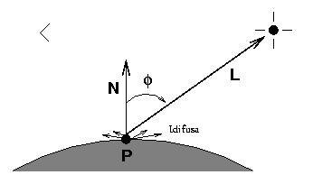

En aquest model es considera que els focus de llum són puntuals i que
els objectes tenen només reflexió difosa pura. De manera intuïtiva,
podem imaginar que el punt Q en que volem calcular el color irradia la
mateixa llum en totes les direccions i per tant el color del punt no
depèn de la direcció de visió. La llum emesa serà una proporció de la
llum incident donada per kd i  .
.
|  |
Per el càlcul de la llum incident, fem la hipòtesi inicial d'un únic
focus de llum; la quantitat d'energia (llum) incident en un punt Q,
per unitat de superfície serà directament proporcional a l'àrea de
superfície exposada a la font de llum (imagineu una estufa, quan més
perpendicular arriba la seva energia a vosaltres, més noteu la seva
calor). Per tant, quant més perpendicular sigui la llum incident a la
superfície més llum serà rebuda. Es dedueix que una manera d'aproximar
aquest efecte és mitjançant el cosinus de l'angle ( ) entre la normal a la
superfície en el punt Q en que volem calcular el color i la direcció
de la llum incident en ell. Òbviament, aquest angle pot variar entre 0
i 90º, quan
) entre la normal a la
superfície en el punt Q en que volem calcular el color i la direcció
de la llum incident en ell. Òbviament, aquest angle pot variar entre 0
i 90º, quan  =0 el =1, l'energia rebuda serà màxima.
=0 el =1, l'energia rebuda serà màxima.
D'aquesta llum incident, una certa proporció (kd) es
reflexa de manera difosa pura (en totes direccions) essent el seu
color afectat per el color difós de l'objecte ( ).
).
L'equació empírica corresponent per al càlcul del color emès difós per un punt Q, anomenada equació de Lambert, serà doncs la següent:
La figura següent mostra un exemple de la visualització d'una esfera
blanca ( =(1.0,1.0,1.0), il·luminada amb llum blanca =(1.0,1.0,1.0), d'esquerra a dreta variem
kd en {0.4, 0.55, 0.7, 0.85, 1.0).
=(1.0,1.0,1.0), il·luminada amb llum blanca =(1.0,1.0,1.0), d'esquerra a dreta variem
kd en {0.4, 0.55, 0.7, 0.85, 1.0).

|
Si hi ha més d'un focus de llum la difusió total es calcula com la suma de les degudes a cada focus aïllat:
La fórmula empírica global considerant reflexió difosa ambient i deguda a focus de llums és: